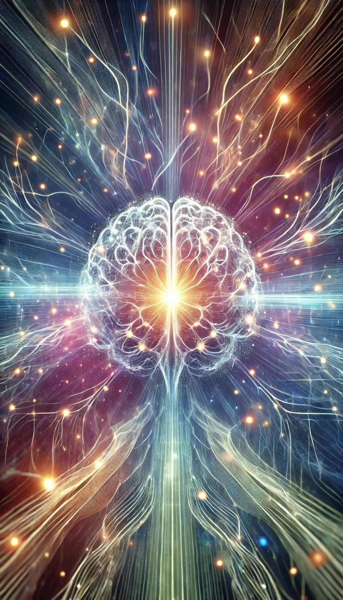
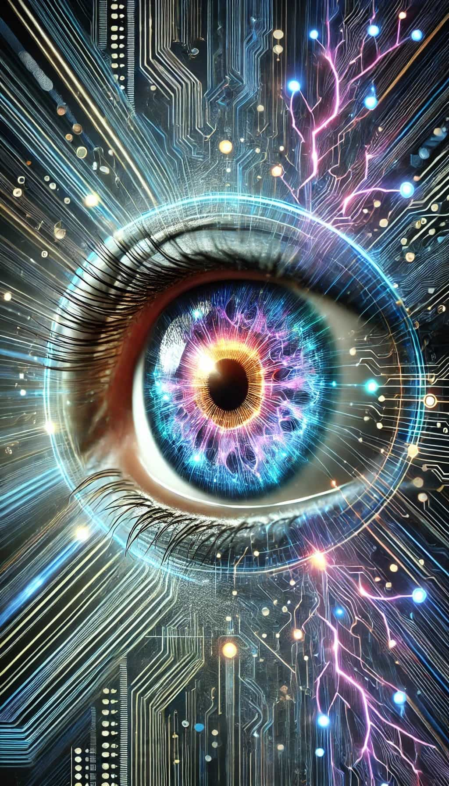

The Great Awakening: A Cognitive Revolution
Introduction
In the grand arc of history, humankind has experienced several transformational shifts: the Agricultural Revolution, the Scientific Revolution, and the Industrial Revolution, each reshaping society, economy, and how we perceive the world. We now stand at the precipice of what could be the most profound revolution of all - the Cognitive Revolution, or "The Great Awakening."
Driven by advancements in neurotechnology and artificial intelligence, this potential awakening promises to reshape our understanding of ourselves, our societies, and our world. As we confront the problems we've created - from climate change to political instability - this cognitive revolution raises the possibility of transforming what humans are capable of, over and above solving the problems in front of us.
The Argument in Plain Terms
Reading glasses fixed a problem that centuries of effort had not touched. People with poor near vision could not read their way to better eyes, could not practise their way there, and could not be educated into it. A piece of ground glass solved it in an afternoon. The Great Awakening asks whether the same move is available for thinking: whether the failures that education and policy keep failing to fix are hardware failures with a hardware remedy.
The problem is correctly named. Tversky and Kahneman (1974) established that judgement under uncertainty runs on a small set of mental shortcuts that produce the same errors again and again, and that the errors persist in people who know about them. That is a limit of the equipment rather than a gap in anyone's education.
The fix has to reach further than practice. Working memory training was the most-tested route to general improvement, and Melby-Lervåg et al. (2016) found across 145 comparisons that it lifts the trained task and transfers no further. Drugs fare no better, with Repantis et al. (2010) reporting modest and inconsistent gains in healthy people. Anything that works has to change the equipment rather than exercise it, which is what neurotechnology proposes to do.
The second requirement is aim. Kahan et al. (2012) found the people with the highest science literacy and numeracy to be the most polarised on climate risk rather than the most in agreement, because reasoning ability serves whatever the reasoner is trying to do. Enhancement therefore has to reach motivation as well as capacity, and that is the target the Great Awakening sets.
The Problem: Our Self-Made Challenges
Humans, remarkable as we are, have consistently been both the creators of, and victims to, our own problems. Our intelligence allows us to mold the world in ways no other species can, but it also leads to unintended consequences that imperil our future.
- Environmental Degradation: Our exploitation of the Earth’s resources has led to deforestation, pollution, and the loss of biodiversity, threatening the planet's ecosystems and our survival.
- Social and Economic Problems: Societies are plagued by disparities in education and access to healthcare, creating cycles of poverty and disenfranchisement.
- Conflict and Violence: From cyber warfare to physical armed conflicts, our societies remain steeped in aggression, driven by political, social, and ideological divisions.
- Health Crises: Beyond pandemics, our modern world is rife with lifestyle diseases, mental health crises, and the overall stress of a high-paced, high-pressure life.
- Cognitive Shortcomings: Human decision-making, limited by cognitive biases, emotional reactivity, and short-term thinking, hinders our ability to address these pressing challenges effectively.
These issues stem from the fundamental limitations of human cognition. Despite our intelligence, we are still beholden to instincts and thought patterns that evolved for survival in a far simpler world. As our environment becomes more complex, global, and interconnected, our ancestral brains struggle to keep up.

Universe 00110000
The Core Problem: Our Cognitive Limitations
At the heart of many of our self-created crises are the innate limitations of the human brain. While our cognitive abilities have served us well in many respects, they are ill-equipped to handle the complexity of the modern world. Some of the key challenges include:
- Cognitive Biases: Judgement under uncertainty runs on heuristics that work well in ordinary conditions and fail in characteristic, repeatable ways (Tversky and Kahneman 1974). Knowing about a bias does not reliably remove it.
- Short-term Thinking: Many of our decisions prioritize immediate rewards over long-term consequences, contributing to problems like environmental degradation and financial crises.
- Tribalism: The tendency to form in-groups and out-groups fuels conflict and blocks cooperation. It forms on almost nothing: Tajfel et al. (1971) produced in-group favouritism among strangers sorted by a coin flip, with no history, no contact, and nothing at stake.
To address these challenges, we need to go beyond incremental improvements in education or policy. We need to enhance human cognition itself.
The Solution: Cognitive Enhancement as a Path to Awakening
What if we could overcome the limitations of our cognitive hardware? Cognitive enhancement - using technology to improve human thinking, memory, creativity, and emotional regulation - offers a potential solution to the deep-seated problems we face.
Key Areas of Cognitive Enhancement
- Enhanced Critical Thinking: Better evaluation of evidence reduces the purchase of misinformation wherever the reasoner is trying to be right. Kahan et al. (2012) fix the condition precisely: greater numeracy and science literacy tracked greater polarisation on contested questions, because reasoning ability serves whatever the reasoner is trying to do. That identifies what has to be enhanced first, and it is a motivational target rather than a cognitive one.
- Amplified Emotional Intelligence: With greater emotional awareness and control, we could navigate social dynamics more skillfully, reducing conflicts and fostering cooperation.
- Expanded Working Memory: More capacity to hold and manipulate information would help with complex problems, and practice is the exhausted route to it: Melby-Lervåg et al. (2016) found across 145 comparisons that training lifts the trained task and transfers no further. That closes the incremental option and leaves the one that differs in kind from practice, which is what the neurotechnology claim proposes.
- Heightened Self-awareness: Better introspection would clarify motivation and behaviour, and the obstacle is architectural: the processes that generate a preference are not open to inspection, so introspection returns constructions rather than readings, however vivid they feel. A boundary in the equipment is exactly what an instrument that reads the process directly is for.
The Great Awakening: Confronting Our Past Selves
In the journey of cognitive enhancement and heightened awareness, one of the most profound consequences is the ability to confront our past selves with unparalleled clarity. This enhanced self-reflection offers a dramatic shift in how we perceive and understand our actions, decisions, and beliefs, often provoking intense emotional reactions. Let's explore how this cognitive transformation unfolds.
1. The Shock of Crystal-Clear Retrospection
With enhanced cognition, your ability to look back at past decisions becomes dramatically refined. What was once viewed through the haze of selective memory and emotional bias now becomes clear and undeniable. You gain the cognitive tools to dissect past actions with surgical precision, reaching past what you did to the motivations and mental limitations that led you there.
2. Physical and Emotional Sensations: The Weight of Regret
Confronting these realizations can provoke intense physical and emotional reactions. You might experience deep feelings of embarrassment, regret, or even shame as you recall moments in your life where you now recognize your ignorance or emotional reactivity. The physiological sensations - racing heart, flushed cheeks, or a sinking feeling in your stomach - might mirror the discomfort of reliving a deeply awkward or painful experience.
3. Alienation from the Past Self: A Growing Disconnection
As this process of self-reflection deepens, many individuals may begin to feel a sense of alienation from their former selves. The person you once were - defined by cognitive limitations, emotional volatility, and social biases - may now seem like a stranger. This disconnect raises existential questions about identity and continuity. You might feel as though you are no longer the same person, that the version of yourself that existed in the past was someone completely different, unaware of the truths you now see with clarity.
4. The Smell of Our Past
Imagine living your entire life without the ability to smell. You’ve gone about your days unaware that you’ve emitted unpleasant odors, that others around you could detect but you were oblivious to. Then, one day, you suddenly acquire a keen sense of smell.
The shock of realizing that you’ve been carrying an odor all along - one that was off-putting or even repugnant to others - could be overwhelming. Just as this person might now experience the embarrassment and discomfort of knowing they were blind to something so obvious, enhanced cognition forces you to confront the “stench” of your past decisions and behaviors.
5. The Domino Effect of Realizations
Once the process of cognitive awakening begins, it often doesn’t stop with just one realization. Instead, each new insight prompts another, triggering a cascading effect of self-awareness. A single mistake or bias you uncover may lead you to reevaluate related decisions, beliefs, or relationships.
6. Balancing Self-Criticism and Self-Compassion
As these realizations unfold, a natural emotional response is self-criticism. The stark recognition of past mistakes might amplify feelings of regret or shame, particularly as you realize the broader implications of your actions on your life and others. However, cognitive enhancement also provides the opportunity for self-compassion, as you see that your mistakes were part of the process of growth and evolution.
7. Struggling to Relate to Others
As you emerge from this process of enhanced self-awareness, you may find it increasingly difficult to relate to others who haven’t undergone the same transformation. The heightened clarity with which you now see the world can make it challenging to engage in the same conversations, beliefs, and social dynamics that once felt natural.
8. A Rebirth of Identity
Ultimately, the confrontation with your past self may lead to a profound shift in your sense of identity. As you reflect on the ways in which your cognitive limitations shaped your life, you may feel as though you are undergoing a form of rebirth. This sense of rebirth can be both liberating and disorienting, as you grapple with the implications of becoming someone new.

Universe 00110000
Societal Implications of Cognitive Enhancement
The societal effects of a mass cognitive awakening could be profound:
- Collapse of Misinformation: Better critical thinking weakens propaganda once the audience wants to be right more than it wants to belong. Kahan et al. (2012) show what happens where those two pull apart, which is why accuracy-seeking is the first thing an enhancement has to reach.
- Reevaluation of Social Norms: With enhanced empathy and emotional intelligence, societal norms around justice, fairness, and cooperation could be reimagined.
- Economic Transformation: New economic models that prioritize sustainability and well-being over consumption and profit might emerge as individuals become more attuned to long-term consequences.
- Global Cooperation: Less tribalism and more empathy would open cooperative routes through global problems. The obstacle is that group loyalty forms without cause (Tajfel et al. 1971) and confers real benefits on those who hold it, which makes it a feature to be redirected rather than a defect to be removed.
Conclusion
The Great Awakening identifies the bottleneck correctly. Judgement under uncertainty runs on heuristics that fail in characteristic ways education has not corrected (Tversky and Kahneman 1974), and group loyalty forms among strangers sorted by a coin flip (Tajfel et al. 1971). These are properties of the equipment, and the problems now facing the species are of a size the equipment was never shaped for.
What enhancement has to deliver is aim rather than horsepower. Reasoning ability turned on a contested question defends the position already held: the people with the highest science literacy and numeracy are the most polarised rather than the most in agreement (Kahan et al. 2012). Capacity without direction produces better advocates.
That makes the target specific and reachable. Build the enhancement that raises a person's willingness to be corrected, and every other gain compounds on top of it. That is the Awakening worth having, and it is a design problem rather than a mystery.
References
- Kahan, Dan M., Ellen Peters, Maggie Wittlin, Paul Slovic, Lisa Larrimore Ouellette, Donald Braman, and Gregory Mandel. "The Polarizing Impact of Science Literacy and Numeracy on Perceived Climate Change Risks." Nature Climate Change 2, no. 10, 2012, 732–735.
- Melby-Lervåg, Monica, Thomas S. Redick, and Charles Hulme. "Working Memory Training Does Not Improve Performance on Measures of Intelligence or Other Measures of 'Far Transfer': Evidence from a Meta-Analytic Review." Perspectives on Psychological Science 11, no. 4, 2016, 512–534.
- Repantis, Dimitris, Peter Schlattmann, Oona Laisney, and Isabella Heuser. "Modafinil and Methylphenidate for Neuroenhancement in Healthy Individuals: A Systematic Review." Pharmacological Research 62, no. 3, 2010, 187–206.
- Tajfel, Henri, M. G. Billig, R. P. Bundy, and Claude Flament. "Social Categorization and Intergroup Behaviour." European Journal of Social Psychology 1, no. 2, 1971, 149–178.
- Tversky, Amos, and Daniel Kahneman. "Judgment Under Uncertainty: Heuristics and Biases." Science 185, no. 4157, 1974, 1124–1131.